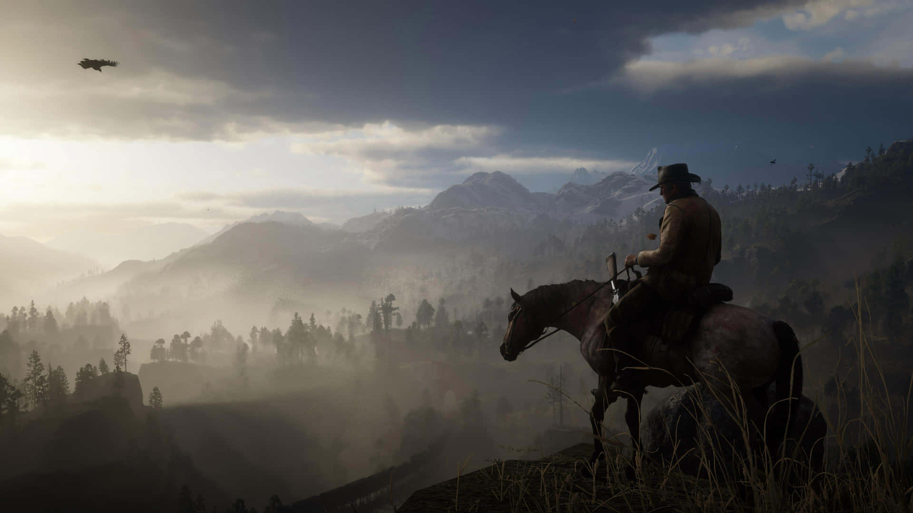

Estados Unidos, 1899. O fim da era do velho oeste começou. Depois de tudo dar errado durante um roubo em uma cidade do oeste chamada Blackwater, Arthur Morgan e a gangue Van der Linde são forçados a fugir. Com agentes federais e os melhores caçadores de recompensas no seu encalço, a gangue precisa roubar, assaltar e lutar para sobreviver no impiedoso coração dos Estados Unidos. Conforme divisões internas profundas ameaçam despedaçar a gangue, Arthur deve fazer uma escolha entre os seus próprios ideais e a lealdade à gangue que o criou.


Arthur Morgan foi um dos grandes foras da lei do Velho Oeste e uma figura importante na história da gangue Van der Linde. Sua infância foi marcada pela morte de sua mãe e pela prisão de seu pai, ou seja, ainda muito jovem, Arthur se viu sem base familiar. Com isso, ele aprendeu cedo que o mundo era um lugar cruel e que, para sobreviver, precisava ser ainda mais duro. Porém, tudo mudou quando ele cruzou o caminho de Dutch van der Linde e Hosea Matthews, dois foras da lei que o acolheram e lhe deram uma espécie de "família".
John Marston é uma das figuras mais marcantes da gangue Van der Linde. Ele perdeu a mãe e seu pai ainda criança e cresceu em um orfanato. Mas não demorou muito para ele fugir de lá e tentar a sorte sozinho nas ruas, dando início a sua vida no mundo da violência e sobrevivência. Tudo mudou na vida de John e ele encontrou um propósito quando conheceu Dutch van der Linde e Hosea Matthews, que o acolheram e o tiraram das ruas. Com o passar dos anos, John se tornou um homem sério, pragmático e muitas vezes frio, moldado pelas suas experiências e pela filosofia de vida de Dutch. Apesar de seu passado criminoso, sempre demonstrou um certo senso de honra e um código moral particular. John é um personagem direto, sarcástico e impaciente, mas também carrega uma grande vontade de mudar e dar à sua família uma vida melhor

O líder de um grande bando de foras da lei e desajustados. Idealista, anarquista, carismático, culto, experiente, mas possivelmente começando a desmoronar sob as pressões do mundo moderno que se aproxima.